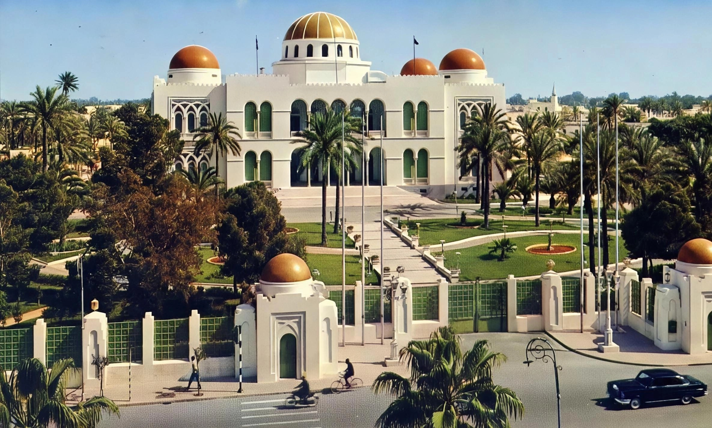
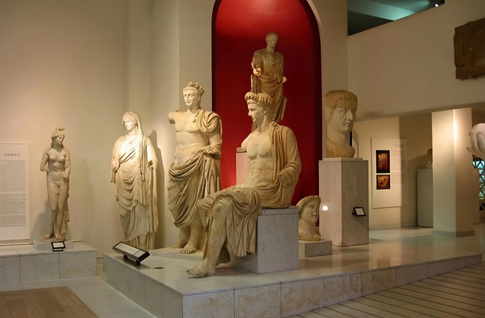
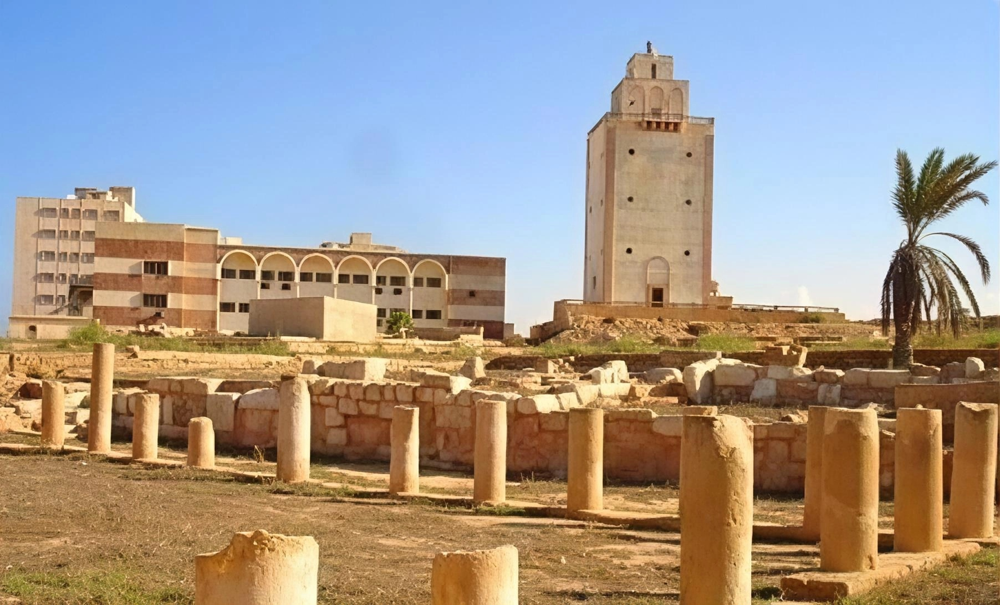
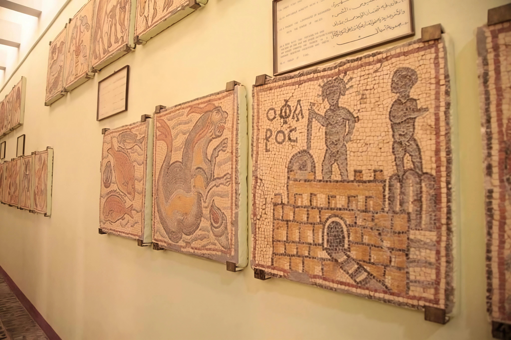

Libyan Museums
Discover the museums that tell the story of Libya's history and civilisation.
Discover the museums that tell the story of Libya's history and civilisation.

Libya's most important museum, located inside Tripoli. It holds collections from the Stone Age through the Islamic era, including Roman statues, coins, and ceramics.

Libya's main national museum, home to a rare collection of Roman, Greek, and Islamic antiquities discovered across the country.

Housed in a historic building in the heart of Benghazi, with archaeological holdings from eastern Libya, including pieces from Cyrene and Ptolemais.

Located within the archaeological site, it holds Roman mosaics, statues, and artefacts recovered from the excavations.

Tells the story of the Ghadames oasis and its cultural heritage, with traditional tools, clothing, and items reflecting desert life.

Holds archaeological items from the Green Mountain region, including pieces from Cyrene and nearby sites, offering insight into the region's history.